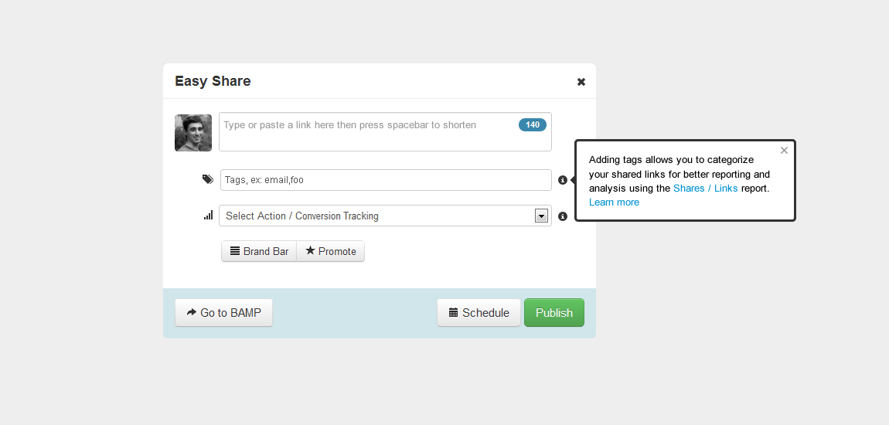
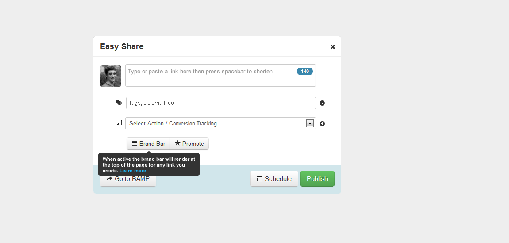

Here are mockups of the EasyShare bookmarklet using standard help functionality. Note that the popover shown here isn't stock bootstrap, but a customized version I proposed for our field-level help pattern (open on-click, close icon, scroll bar when necessary). I cut back the text as much as possible, removing it for controls that were more obvious or discoverable like schedule and publish.
 